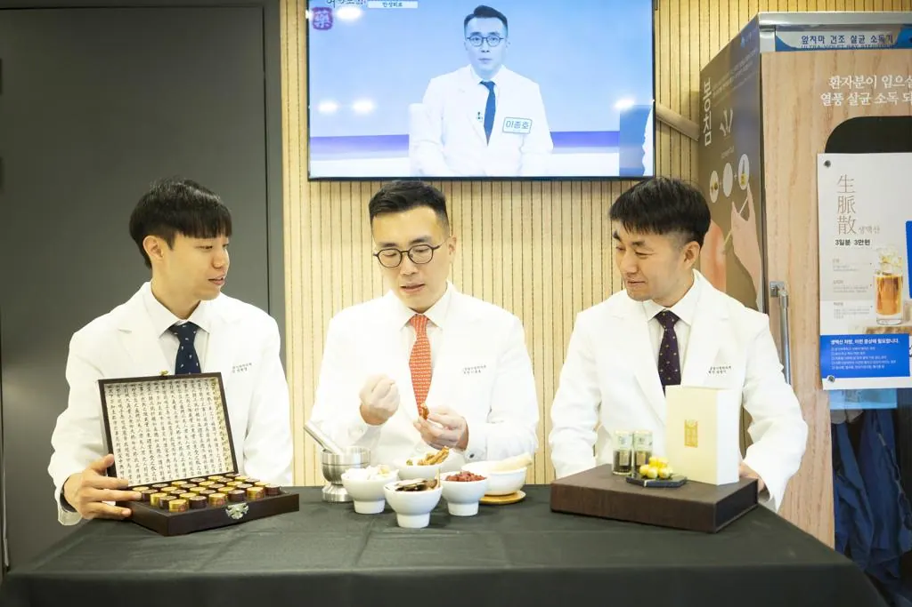
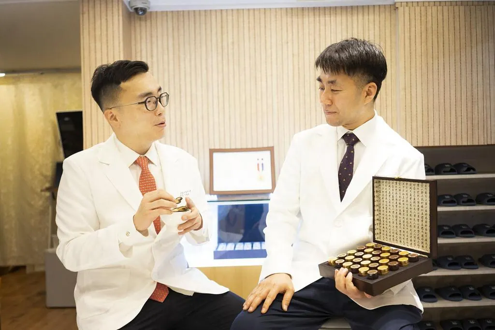
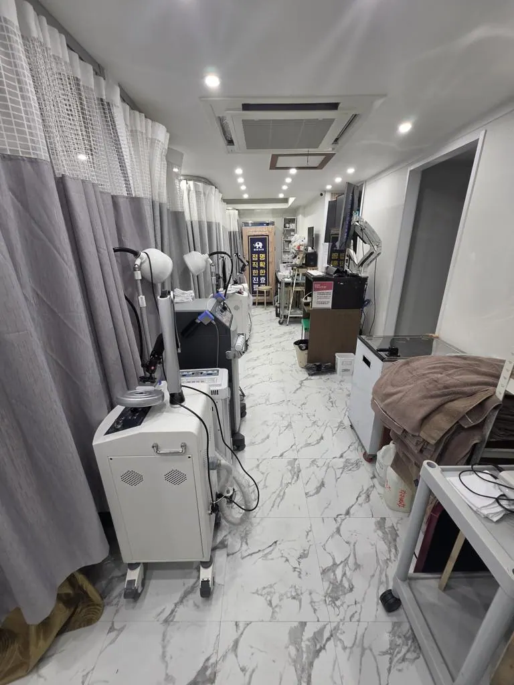

식후 더부룩함, 속쓰림, 변비나 잦은 설사, 입맛 저하가 이어지는 분을 위한 안내입니다. 좋은꿈참사랑한의원은 위장 증상만 따로 보지 않고 식사 시간, 잠, 스트레스와 함께 소화를 살핍니다.

잘 먹고, 잘 소화하고, 잘 배설하기
조금만 먹어도 더부룩하거나, 스트레스를 받으면 체하거나, 손발은 찬데 얼굴은 뜨겁거나, 화장실이 늘 불편한 분이 많습니다. 검사에서는 이상이 없다고 해도 일상은 분명히 불편합니다.
소화·체온·배변을 이렇게 살펴봅니다
체중이 이유 없이 줄거나, 혈변이 있거나, 구토가 계속되면 내시경 등 검사를 먼저 받으셔야 합니다.
- 식사량, 식사 시간, 먹고 난 뒤의 느낌
- 배변 횟수와 굳기, 잔변감
- 추위·더위에 대한 느낌과 손발 온도
- 수면과 스트레스
- 진맥과 설진
만성 소화불량은 어떤 상태인가요?
검사에서 큰 이상이 없다는 말을 들었는데도 식후 더부룩함, 이른 포만감, 명치 불편이 몇 주 이상 반복되는 경우가 있습니다. 이럴 때는 먹는 양과 속도, 식사 시간, 잠과 긴장의 리듬을 함께 보는 것이 출발점입니다.
위나 장에 눈에 띄는 이상이 없어도 음식을 받아들이고 내려보내는 리듬이 흔들리면 불편이 생길 수 있습니다. 그래서 무엇을 먹었는지만큼 언제, 어떻게, 어떤 상태에서 먹었는지를 함께 봅니다.
상담에서 자주 듣는 이야기
같은 더부룩함이라도 식후 바로 오는지, 몇 시간 뒤에 오는지, 공복에 쓰린지에 따라 여쭙는 질문이 달라집니다.
- 조금만 먹어도 배가 꽉 찬 느낌
- 신물이 올라오거나 가슴이 쓰림
- 시험·마감 앞에서 배가 아프거나 설사
- 며칠씩 이어지는 변비
먼저 이렇게 여쭙니다
증상이 생기기 전 며칠 동안 먹은 것과 잠, 긴장했던 일을 떠올려 오시면 상담이 구체적이 됩니다.
- 하루 식사 시간과 먹는 속도
- 증상이 식후 몇 분 뒤에 오나요?
- 내시경 등 최근 검사 결과가 있나요?
- 복용 중인 위장약이나 다른 약이 있나요?
생활에서 먼저 해 볼 것
'좋다는 음식'을 한꺼번에 챙기기보다 불편을 키우는 습관 하나를 줄이는 쪽이 오래 이어 가기 쉽습니다. 변화는 식사 일기로 확인해 보세요.
- 한 입에 20번 이상 씹으며 천천히 먹기
- 저녁은 잠들기 3시간 전에 마치기
- 식후 바로 눕지 않기
- 커피·술·맵고 기름진 음식 줄여 보기
한의원에서 함께 살피는 것
소화와 대소변, 잠, 몸의 온기를 차례로 여쭙고, 진맥과 함께 필요하다고 판단될 때 복진·설진으로 살핍니다. 상태에 맞게 침과 한약 상담 등을 안내하며, 복용 중인 위장약은 처방한 의사와 상의 없이 끊지 않습니다.
필요하면 내과 검사나 내시경을 먼저 권하기도 합니다.
한의학에서는 소화를 이렇게 함께 봅니다
한의학에서는 소화를 비위(脾胃)의 기능으로 설명하며, 몸의 온기와 마음의 긴장이 소화에 함께 영향을 준다고 봅니다. 찬 음식을 먹으면 더 불편한지, 긴장하면 배가 아픈지, 손발이 찬지 같은 질문을 드리는 이유입니다. 복진으로 배의 긴장과 온기를 살피는 것도 같은 맥락입니다.
- 찬 음식이나 음료 뒤에 불편한지
- 긴장하면 배가 먼저 반응하는지
- 대변이 단단한지, 무른지
이럴 때는 다른 진료를 먼저 받으세요
아래 신호가 없더라도 증상이 몇 달씩 이어지면 내과 검사를 한 번 받아 보시기를 권합니다.
- 피를 토하거나 검은 변을 볼 때: 응급실
- 삼키기 어렵거나 이유 없이 체중이 줄 때
- 구토가 계속되거나 배가 심하게 아플 때
- 40대 이후 처음 생긴 증상이 이어질 때: 내시경 등 검사 먼저
좋은꿈참사랑한의원 진료는 이렇게 진행됩니다
접수 후 상담에서 식사와 증상의 시간 순서를 듣고, 필요한 진찰을 거쳐 치료와 생활 안내를 드립니다. 식사 일기를 3~7일 적어 오시면 이야기가 구체적이 됩니다. 다음 진료에서는 그사이 달라진 점부터 이어서 여쭙습니다.
아이와 함께 오시면 보호자께 식사와 배변 습관을 함께 여쭙습니다. 평일 저녁과 주말에도 진료하니 편한 시간에 예약해 주세요.
상도동·노량진에서
노량진 학원가에서는 컵밥과 편의점 식사로 빠르게 끼니를 때우는 수험생이, 사무실 직장인은 늦은 저녁과 회식 뒤 속쓰림을 이야기하곤 합니다. 좋은꿈참사랑한의원은 상도역 3번 출구에서 약 400m 거리이며 평일 저녁 8시까지 진료해 퇴근 뒤에도 상담받을 수 있습니다. 노량진역 3번 출구에서는 마을버스 동작01번으로 오실 수 있습니다.
자주 묻는 질문
스트레스를 받으면 왜 체하나요?
긴장하면 위장의 움직임이 영향을 받을 수 있습니다. 소화 증상을 볼 때 긴장과 수면을 함께 살피는 이유입니다.
매일 대변을 보지 않으면 변비인가요?
횟수만으로 판단하지 않습니다. 굳기, 힘주는 정도, 잔변감을 함께 봅니다.
몸이 차면 무조건 따뜻하게 해야 하나요?
차갑게 느끼는 이유가 사람마다 다릅니다. 갑상선, 빈혈 등 다른 원인도 고려해서 방향을 정합니다.
노량진 근처에서 소화불량 상담을 받을 수 있는 한의원이 있나요?
좋은꿈참사랑한의원에서 소화 상담을 합니다. 진료시간은 평일 09:30~20:00(점심 13:00~14:00), 토·일·공휴일 09:30~15:00입니다.
내시경에서 이상이 없다는데 계속 더부룩해요.
검사 결과와 함께 식사·잠·긴장의 리듬을 여쭙고 생활에서 바꿔 볼 점을 함께 찾습니다.
위장약을 먹고 있어도 한약 상담이 가능한가요?
가능합니다. 약 이름을 알려 주시고, 약은 처방한 의사와 상의 없이 끊지 마세요.
시험 때만 배가 아파요. 상담할 수 있나요?
네. 긴장과 소화는 함께 움직이는 경우가 많아 시험 일정과 식사·잠 패턴을 함께 살핍니다.
아이 소화 문제도 볼 수 있나요?
볼 수 있습니다. 아이의 식사량, 간식, 잠, 배변 습관을 보호자와 함께 여쭙습니다.
식사 일기는 어떻게 쓰나요?
먹은 시각, 음식, 양, 식후 증상, 잠든 시각을 간단히 적으면 됩니다.
예약은 어떻게 하나요?
네이버 예약, 카카오톡 상담, 전화(02-815-7510)로 하실 수 있습니다.
역류성 식도염 약을 먹는데 상담해도 되나요?
상담받으실 수 있습니다. 복용 중인 약을 알려 주시고, 약은 처방한 의사와 상의 없이 끊지 마세요.
변비도 한의원에서 상담하나요?
네. 식사량, 물 섭취, 활동량, 잠과 함께 배변 습관을 여쭙고 생활에서 바꿔 볼 점을 함께 찾습니다.
감수: 좋은꿈참사랑한의원 대표원장 이종호 · 마지막 확인 2026-11-25 · 일반적인 건강 정보이며 진단·치료를 대신하지 않습니다.
만성소화불량 글 모아 보기 (20편)

연말에 한 주에 회식이 세 번이면 속을 어떻게 쉬게 하나요?
회식이 몰린 주에는 늦은 시간의 기름진 음식과 술이 이어져 속이 쉴 틈이 없어지기 쉬워, 회식 사이 끼니와 잠드는 시각을 먼저 묻고 사이 날의 식사부터 함께 조정합니다.
수정 2026-11-25

겨울에 귤·홍시·곶감을 간식처럼 자주 먹은 뒤 속이 쓰리거나 변이 굳고 배에 가스가 찰 때는 어떻게 살피나요?
겨울 과일은 몸에 좋은 간식이라 여겨 양을 따지지 않고 먹기 쉽지만, 귤을 빈속에 여러 개 먹으면 속이 쓰릴 수 있고, 감과 곶감을 자주 먹으면 변이 굳기 쉬우며, 어떤 과일이든 한꺼번에 많이 먹으면 배에 가스가 찰 수 있습니다. 하루 먹는 양과 시간을 정하고, 어떤 과일 뒤에 어떤 불편이 오는지 일주일만 기록해 보면 조절할 방향이 보입니다.
수정 2026-11-25

시험기간만 되면 속이 더부룩하고 배가 자주 아픈 대학생은 어떻게 살피나요?
시험 준비로 긴장이 이어지고 식사가 불규칙해지면 속이 더부룩하거나 배가 아픈 일이 잦아질 수 있어, 식사 시간과 메뉴, 긴장하는 시간대, 대변 상태를 먼저 묻고 시험기간에도 지킬 수 있는 식사 리듬을 함께 정리합니다.
수정 2026-11-25

아침을 거르고 공부를 시작하면 오전에 속이 쓰릴 때는 어떻게 하나요?
아침을 거르고 빈속에 커피를 마셔 오전에 속이 쓰리다면 바나나나 두유처럼 간단한 아침을 먼저 먹고 커피는 그 뒤에 마시며 전날 야식을 줄이는 것부터 해 보고, 반복되면 식사 습관과 긴장을 함께 살핍니다.
수정 2026-11-24

퇴근이 늦어 밤 10시 넘어 배달 음식으로 저녁을 먹으면 속이 쓰리고 잠이 얕을 때는 어떻게 살피나요?
늦은 시간에 기름지거나 매운 음식을 먹고 바로 누우면 속쓰림과 신물 올라옴이 생기고 잠도 얕아질 수 있어, 저녁 시간과 메뉴, 먹고 눕기까지의 시간을 먼저 묻고 바꿀 수 있는 저녁 습관을 함께 정리합니다.
수정 2026-11-24
편의점 식사와 컵라면으로 끼니를 때우다 속이 더부룩할 때는?
편의점 식사와 컵라면으로 끼니를 때워 속이 더부룩할 때는 국물 남기기, 단백질과 채소 한 가지 더하기, 10분 이상 천천히 먹기부터 바꾸고, 더부룩함이 자주 반복되면 식사 습관과 소화 상태를 함께 살핍니다.
수정 2026-11-24
위염으로 약을 오래 먹고 있을 때 생활에서 무엇을 살피나요?
위염으로 위산 억제제나 위장약을 오래 먹고 있다면 약 이름과 기간을 알리고 임의로 끊지 않으며 식사 습관과 음주, 진통소염제 복용, 스트레스와 잠을 함께 점검하고 체중 감소나 검은 변이 있으면 병원 검사를 권합니다.
수정 2026-11-25

속쓰림인지 더부룩함인지 헷갈릴 때는 어떤 말로 설명하면 좋을까요?
명치가 타는 듯 쓰린지, 배가 꽉 찬 듯 무거운지, 신물이 올라오는지를 나눠 말씀해 주시면 식사와 생활 중 어느 부분을 먼저 살펴볼지 정하기 쉬워집니다.
수정 2026-11-24

미용 일로 점심을 거르거나 서서 급하게 먹을 때 속이 불편하면 어떻게 살피나요?
손님 일정에 맞추다 보면 점심이 늦어지거나 서서 급하게 먹게 되어 속쓰림과 더부룩함이 생기기 쉬워, 식사 시각과 먹는 자세, 속이 불편한 때부터 함께 살핍니다.
수정 2026-11-24
버스·택시 기사가 화장실 때문에 물을 참다가 변비가 생길 때는 어떻게 살피나요?
화장실을 쉽게 갈 수 없어 물과 식사를 줄이고 오래 앉아 있으면 변이 단단해지기 쉬워, 물 마시는 양과 식사, 화장실 가는 시간부터 함께 살핍니다.
수정 2026-11-24
택배·배달 일로 차 안에서 급하게 끼니를 때울 때 속이 불편하면 어떻게 살피나요?
이동 중에 급하게 먹거나 끼니를 미루면 속쓰림과 더부룩함이 생기기 쉬워, 하루 식사 시각과 먹는 속도, 물과 커피 마시는 습관부터 함께 살핍니다.
수정 2026-11-24
요리를 하며 맛보기로 하루를 보내 제대로 된 끼니를 못 먹을 때는 어떻게 살피나요?
주방에서 일하면 맛보기와 짧은 간식으로 끼니를 대신하기 쉬워 속이 더부룩하거나 허기가 갑자기 몰려올 수 있어, 하루에 앉아서 먹는 끼니와 시각부터 함께 정리합니다.
수정 2026-11-24

연말 회식을 하고 나면 며칠씩 속이 불편한 이유는 무엇인가요?
연말 회식 뒤 며칠씩 속이 더부룩하고 쓰린 것은 기름진 음식과 늦은 식사, 술, 짧은 잠이 겹친 경우가 많아 식사 시각과 양을 함께 살피며, 검은 변이나 심한 복통이 있으면 병원 확인을 먼저 권합니다.
수정 2026-11-24

매운 음식을 먹고 나서 속이 쓰릴 때는 어떻게 살피나요?
매운 음식 뒤 속쓰림과 배 아픔은 양과 빈도, 공복 여부, 함께 먹은 술이나 커피에 따라 달라 식사 패턴을 함께 살피며, 피가 섞인 변이나 몇 주째 계속되는 속쓰림이 있으면 병원 확인을 먼저 권합니다.
수정 2026-11-24
속쓰림과 신물이 오래 갈 때 어떤 점을 살펴보고, 언제 검사를 받아야 하나요?
속쓰림과 신물이 2주 이상 반복되면 식사 시간과 야식, 누운 자세, 음주·흡연 같은 생활을 함께 살피고, 가슴 통증이 있거나 검은 변·토혈·삼킴 곤란·체중 감소가 있으면 바로 내과 등 병원 확인을 먼저 권합니다.
수정 2026-11-25

시험 스트레스로 변비나 속 쓰림이 올 때는 무엇을 살피나요?
시험 스트레스로 변비나 속 쓰림이 올 때는 식사 시간과 물, 앉아 있는 시간, 긴장 정도를 함께 살피며, 피가 섞인 변이나 심한 복통 같은 신호는 병원을 먼저 권합니다.
수정 2026-11-25

조금만 먹어도 금방 배가 부를 때는 무엇을 살펴보나요?
몇 숟가락만 먹어도 배가 불러 식사량이 줄 때는 먹는 속도와 식사 시간, 스트레스와 체중 변화를 먼저 묻고, 체중이 줄거나 검은 변이 있으면 병원 검사를 먼저 권합니다.
수정 2026-11-24

소화가 오래 불편할 때 한의원에서는 무엇을 먼저 묻나요?
오래 이어지는 소화 불편은 더부룩함·속쓰림·식후 불편·대변 상태를 일상의 말로 먼저 묻고 식사와 잠, 스트레스를 함께 살피며, 체중 감소나 검은 변 같은 경고 증상이 있으면 내과 검사를 먼저 권합니다.
수정 2026-11-24
찬 음식이나 찬 음료를 먹으면 배가 아플 때는 어떻게 하나요?
찬 음식이나 음료 뒤에 복통이나 설사가 반복되면 먹은 양과 속도, 평소 장 상태를 함께 살피고, 열이 나거나 피가 섞인 설사가 있으면 병원 진료를 먼저 권합니다.
수정 2026-11-24

식사 뒤에 속이 더부룩한 것은 무엇 때문이고, 속쓰림과는 어떻게 다른가요?
식후 더부룩함은 먹는 속도와 양, 음식 종류, 변 상태, 잠과 스트레스가 겹쳐 생기는 경우가 많아 함께 살피고, 공복 속쓰림이나 체중 감소·검은 변 같은 경고 신호가 있으면 먼저 병원 검사를 권합니다.
수정 2026-11-25